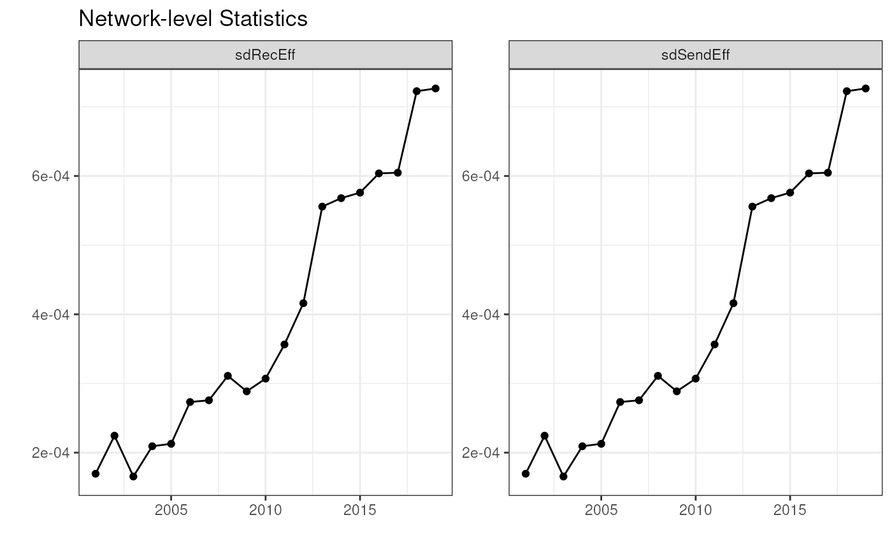

Investigating a netify object
Ha Eun Choi, Cassy Dorff, Colin Henry, and Shahryar Minhas
2022-12-15
netify_investigating.RmdInvestigating a netify object
Once we have made a netify object to fit our needs, we
can inspect that object in three main ways using the package functions.
(1) As already seen, once the object is printed, the user receives a
message with some basic information about their network. (2) We can
further inspect the object by turning to the peek and
summary functions.
# cross sectional peek
peek(event_mat)
#> 'Al Shabaab' Militia 3R Aaro Aaro
#> 'Al Shabaab' Militia NA 0 0
#> 3R 0 NA 0
#> Aaro Aaro 0 0 NA
#> Aasi Clan Militia (Somalia) 0 0 0
#> Abakpa Nike Communal Militia (Nigeria) 0 0 0
#> Aasi Clan Militia (Somalia)
#> 'Al Shabaab' Militia 0
#> 3R 0
#> Aaro Aaro 0
#> Aasi Clan Militia (Somalia) NA
#> Abakpa Nike Communal Militia (Nigeria) 0
#> Abakpa Nike Communal Militia (Nigeria)
#> 'Al Shabaab' Militia 0
#> 3R 0
#> Aaro Aaro 0
#> Aasi Clan Militia (Somalia) 0
#> Abakpa Nike Communal Militia (Nigeria) NA
# changing actors peek
peek(event_data_time_actors, tIndex = 3)
#> Error in "netify" %in% class(x): object 'event_data_time_actors' not foundNotes:
- notes for peek function: add in option for people to specify specific actors and to display them c(‘Boko Haram’, ‘ISIS’)?
- notes for peek function: add in option for users to specify multiple time points? => HC: we don’t have these options yet.
Summary Functions
The summary() function returns valuable information
about the network:
- numActors: Number of actors in the network
- dens: network density
- recip: reciprocity
- sdSendEff: sender effects
- sdRecEff: sender effects
- srCov: sender receiver covariance
sum_event_mat <- summary(event_mat)
sum_event_mat
#> net numActors dens recip sdSendEff sdRecEff srCov
#> 1 1 3205 0.001042184 1 0.002634784 0.002634784 1Users can also supply their own summary functions. This is awesome! The output is an easy to digest dataframe.
transitivity = function(mat){
E <- mat-mean(mat,na.rm=TRUE)
D <- 1*(!is.na(E))
E[is.na(E)] <- 0
trans <- sum(diag(E%*%t(E)%*%E))/( sum(diag(D%*%t(D)%*%D))*sd(c(mat),na.rm=TRUE)^3)
return(trans)
}
cycles = function(mat){
E <- mat-mean(mat,na.rm=TRUE)
D <- 1*(!is.na(E))
E[is.na(E)] <- 0
cycles <- sum(diag(E%*%E%*%E))/( sum(diag(D%*%D%*%D))*sd(c(mat),na.rm=TRUE)^3)
return(cycles)
}
sum_event_mat <- summary(event_mat, cycles=cycles, transitivity=transitivity)
sum_event_mat
#> net numActors dens recip sdSendEff sdRecEff srCov cycles
#> 1 1 3205 0.001042184 1 0.002634784 0.002634784 1 0.01815067
#> transitivity
#> 1 0.01815067The second summary function is called summary_actor. The
summary_actor() function returns useful actor level
statistics for the network object. This function returns a data frame
object where N equals the number of actors in the network.
Error: In line 17 of
summary_actor.R, netify_check(object) should
be netify_check(netlet)
network_sum <- summary_actor(event_mat)
network_sumPlotting functions
Netify provides its own plotting functions for both network- and actor-level statistics for netify objects.
The first plotting function is called plot_networkStats.
The plot_networkStats() function returns a graph object
summarizing network-level statistics when it is longitudinal. It has
three main parameter: netlet, logitudinal, and
net_stat. Since it plots a network-level visualization,
logitudianl should always set to TRUE. For
net_stat, you can pick summary statistics of your interest
from the netlet object you created with the summary
function. The default is “dens”.
library(ggplot2)
plot_networkStats(nets_time_sum, longitudinal = TRUE, net_stat=c("sdSendEff", "sdRecEff")) +
labs(title = "Network-level Statistics") +
theme_bw() # you can overwrite the theme and other ggplot functions
The second plotting function is called plot_actorStats.
The plot_actorStats() function returns a actor-level
visualization.. It has five main parameter: netlet,
logitudinal, net_stat,
actor_names, and toplist_n.
Using actor_names and toplist_n you can
pick actors in your network and the number of actors to be listed as top
n actors in your visualization. More specifically,
actor_names is character indicating actor name(s) in the
network, and toplist_n is numeric indicating the number of
actors to be listed as top n actors.
=> HC: I just picked random actors here but please do change this if you think there are better examples
plot_actorStats(network_sum, longitudinal=FALSE, net_stat=c('average_degree_in','average_degree_out'),
actor_names=c('Government of Nigeria', 'Marwa Ethnic Militia (Nigeria)'), toplist_n=NULL)
plot_actorStats(network_sum, longitudinal=FALSE, net_stat='average_degree_in', toplist_n=10)